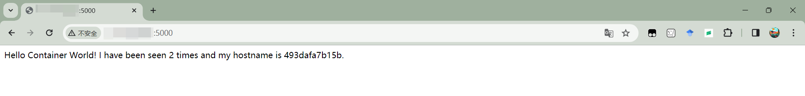

Docker网络
网络常见命令
IP 地址查看
1 | ifconfig |
docker0: flags=4099<UP,BROADCAST,MULTICAST> mtu 1500
inet 172.17.0.1 netmask 255.255.0.0 broadcast 172.17.255.255
inet6 fe80::42:4dff:fe97:aeaa prefixlen 64 scopeid 0x20<link>
ether 02:42:4d:97:ae:aa txqueuelen 0 (Ethernet)
RX packets 22207 bytes 1267419 (1.2 MB)
RX errors 0 dropped 0 overruns 0 frame 0
TX packets 24821 bytes 42098765 (42.0 MB)
TX errors 0 dropped 0 overruns 0 carrier 0 collisions 0
eth0: flags=4163<UP,BROADCAST,RUNNING,MULTICAST> mtu 1500
inet 10.0.8.12 netmask 255.255.252.0 broadcast 10.0.11.255
inet6 fe80::5054:ff:fef4:485f prefixlen 64 scopeid 0x20<link>
ether 52:54:00:f4:48:5f txqueuelen 1000 (Ethernet)
RX packets 750566 bytes 355417573 (355.4 MB)
RX errors 0 dropped 0 overruns 0 frame 0
TX packets 617213 bytes 156085233 (156.0 MB)
TX errors 0 dropped 0 overruns 0 carrier 0 collisions 0
lo: flags=73<UP,LOOPBACK,RUNNING> mtu 65536
inet 127.0.0.1 netmask 255.0.0.0
inet6 ::1 prefixlen 128 scopeid 0x10<host>
loop txqueuelen 1000 (Local Loopback)
RX packets 43503 bytes 9178358 (9.1 MB)
RX errors 0 dropped 0 overruns 0 frame 0
TX packets 43503 bytes 9178358 (9.1 MB)
TX errors 0 dropped 0 overruns 0 carrier 0 collisions 0
docker0： 的虚拟网络桥接接口。 地址为172.17.0.1，子网掩码为255.255.0.0，广播地址为172.17.255.255。
容器通信的网络接口。
eth0：物理网络接口。 地址为10.0.8.12，子网掩码为255.255.252.0，广播地址为10.0.11.255。
主机的物理网络接口，用于与局域网通信。
lo：回环接口，用于本地通信。 地址为127.0.0.1，子网掩码为255.0.0.0。
同一台计算机上进行本地主机通信。
ip addr
网络连通测试
1 | ping baidu.com |
1 | telnet www.baidu.com 80 |
1 | tracepath www.baidu.com |
1?: [LOCALHOST] pmtu 1500
1: 11.66.200.225 0.676ms
1: 11.66.200.225 0.564ms
2: 11.66.247.200 0.335ms
3: 10.200.235.145 1.254ms asymm 5
4: 10.196.89.113 1.642ms asymm 5
5: no reply
6: no reply
7: no reply
8: 106.38.212.142 4.009ms
9: no reply
10: no reply
11: no reply
12: no reply
13: no reply
14: no reply
15: no reply
16: no reply
17: no reply
18: no reply
19: no reply
20: no reply
21: no reply
22: no reply
23: no reply
24: no reply
25: no reply
26: no reply
27: no reply
28: no reply
29: no reply
30: no reply
Too many hops: pmtu 1500
Resume: pmtu 1500
检查从本地计算机到目标 地址之间的网络路径：
每一行代表了路径中的一个跃点，以及跃点对应的 地址和响应时间（以毫秒为单位）。以下是每个部分的解释：
- 第一列是跃点的序号。例如， 表示本地主机（您的计算机）， 表示第一个跃点， 表示第二个跃点，以此类推。
- 第二列是跃点对应的 地址。
- 第三列是从本地计算机到该跃点的往返响应时间。
路由跃点的数量可能会因为网络的配置和路径的复杂性而有所不同。每个"“表示在此跃点上没有响应，可能是因为该跃点未回复或者设置了防火墙规则阻止了回复。一旦网络路径中的某个路由器或设备不回应，后续的跃点将显示为”"。
计算机发送第一个数据包到目标 地址，数据包的 TTL（生存时间）设置为 。第一个路由器（跃点）收到数据包后，将 减 ， 减少到 ，路由器丢弃数据包并发送一个"“消息回复给发送者，表示数据包已超时。计算机接收到”“回复后，知道第一个跃点的 地址和响应时间。计算机发送第二个数据包， 设置为 ，重复上述过程，以获取第二个跃点的信息。计算机逐渐递增 ，重复发送数据包，以获取每个跃点的 地址和响应时间。如果数据包到达目标 地址，则目标主机会发送回复，显示网络路径的最后一跃点。否则，”“将显示”“表示没有回复。在某些情况下，如果网络路径太长，数据包可能会因为超过最大传输单元（PMTU）而被丢弃，”“将显示”"并提供相关信息。
请求 Web服务
1 | curl baidu.com |
容器的网络
：
1 | docker network COMMAND |
connect |
|
create |
|
disconnect |
|
inspect |
|
ls |
|
prune |
|
rm |
Docker bridge 网络
查询 机器的网络：
创建两个 容器 和
1 | docker container run -d --rm --name box1 busybox /bin/sh -c "while true; do sleep 3600; done" |
1 | docker container run -d --rm --name box2 busybox /bin/sh -c "while true; do sleep 3600; done" |
分别查询两个容器的 地址：
再查询 服务器的网络：多出 和 虚拟以太网接口，用于与 容器 和 关联，连接主机
查询 目前网络连接方式：
1 | docker network ls |
查询 桥接网络：
1 | docker network inspect bridge |
下面信息摘要包含了网络的关键属性：网络名称、、创建时间、范围、驱动程序、 配置、容器信息和选项。
[
{
“Name”: “bridge”,
“Id”: “eaf0c25b8d1e816eeb7aea6814508fd2ea2bca8fdfd47fc0ca11a8f175fef7db”,
“Created”: “2023-08-23T16:51:33.970496636+08:00”,
“Scope”: “local”,
“Driver”: “bridge”,
“IPAM”: {
“Driver”: “default”,
“Config”: [
{
“Subnet”: “172.17.0.0/16”,
“Gateway”: “172.17.0.1”
}
]
},
“Containers”: {
“2f6cac7d1d47ed7b1c5df3a79f3b2daad97ff6acf62060dc8c2594cd19e06bfd”: {
“Name”: “box1”,
“IPv4Address”: “172.17.0.2/16”
},
“4ccdf6324e7152d9b26c5777cb3df131a350cf5dd50066f0bfff64f568e6cccb”: {
“Name”: “box2”,
“IPv4Address”: “172.17.0.3/16”
}
},
“Options”: {
“com.docker.network.bridge.default_bridge”: “true”,
“com.docker.network.bridge.enable_icc”: “true”,
“com.docker.network.bridge.enable_ip_masquerade”: “true”,
“com.docker.network.bridge.host_binding_ipv4”: “0.0.0.0”,
“com.docker.network.bridge.name”: “docker0”,
“com.docker.network.driver.mtu”: “1500”
}
}
]
网络拓扑：
端口转发
创建 容器和 两个容器 和 ，并作 与 服务器的端口映射：
1 | docker container run -d --rm --name web -p 8080:80 nginx |
1 | docker container inspect --format '{{.NetworkSettings.IPAddress}}' web |
1 | docker container run -d --rm --name client busybox /bin/sh -c "while true; do sleep 3600; done" |
1 | docker container inspect --format '{{.NetworkSettings.IPAddress}}' client |

： 表示访问
服务器（本机）
浏览器（其他主机）
Docker host 网络
本地监听，不多赘述。
Demo：Python Flask + Redis
一个基本的 应用，使用 构建，追踪访问次数显示格式化消息：当用户访问根路径时，应用会递增访问次数并返回消息，告诉用户已经访问了多少次，同时提供主机名。
app.py：
1 | from flask import Flask |
Dockerfile：
1 | FROM python:3.9.5-slim |
docker image
1 | docker image pull redis |
1 | docker image build -t flask-demo . |
docker network(bridge)
1 | docker network create -d bridge demo-network |
docker container(redis & flask)
1 | docker container run -d --name redis-server --network demo-network redis |
1 | docker container run -d --name flask-demo --network demo-network --env REDIS_HOST=redis-server -p 5000:5000 flask-demo |
路由访问

环境恢复
删除实例化的 ，
1 | docker container rm -f $(docker container ps -aq) |
1 | docker network rm demo-network |